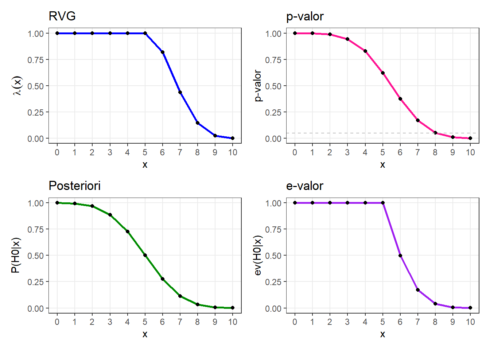
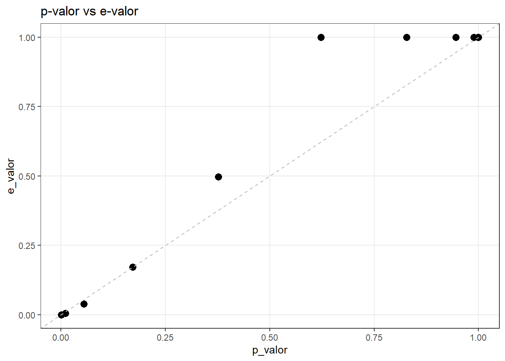

x <- seq(from = 0, to = 10, by = 1)Modelo Bernoulli-Beta
Introdução
Queremos analisar o comportamento de diferentes estatísticas de teste sobre uma proporção populacional \(\theta\). Vamos pensar em dados binários, ou seja, usaremos uma distribuição Bernoulli, onde buscaremos testar hipóteses sobre o parâmetro de sucesso \(\theta\).
Definindo o modelo
Seja \(X_1, \cdots X_n\) v.a. c.i.i.d tais que \(X_i | \theta \sim Bernoulli(\theta)\). Para esse exercício fixaremos \(n=10\).
Para esse caso, a estatística suficiente para \(\theta\) é a soma dos sucessos, denotada por \(T(\mathbf{x}) = \sum_{i=1}^{10} X_i\), que segue uma distribuição Binomial, ou seja:
\[ T(\mathbf{x}) = \sum_{i=1}^{10} X_i | \theta \sim Bin(10, \theta) \]
Suponha que, a priori desse modelo seja uma priori conjugada \(\theta \sim \text{Beta}(a, b)\). Para facilitar e não termos preferência para nenhum valor, fixaremos os parâmetros como \(a=1\) e \(b=1\), ou seja, uma distribuição Uniforme no intervalo \((0, 1)\).
Consequentemente, a distribuição a posteriori para um dado \(x\) será:
\[ \theta | \mathbf{x} = \mathbf{x} \sim \text{Beta}(1+x, 1+n-x) \]
Teste de Hipótese
Deseja-se testar
\[ H_0: \theta \leq \frac{1}{2} \, \text{ contra } \, H_1: \theta > \frac{1}{2} \]
Desse modo, nosso espaço paramétrico é \(\Theta = [0, 1]\) e o subespaço de \(H_0\) é \(\Theta_0 = [0, 0.5]\).
Vamos estudar o comportamento das estatísticas de teste para cada valor de \(x = \sum_{i=1}^n \in \{0, 1, \cdots, 10 \}\) (note que são todos os possíveis valores de \(T(\mathbf{X})\)).
Como fixamos o tamanho da amostra em \(n=10\), a estatística suficiente \(x\) vai variar em um intervalo discreto e finito:
\[ x \in \{0, 1, 2, \dots, 10\} \] De maneira computacional
Para cada um desses valores possíveis de \(x\), vamos calcular (e depois comparar) quatro medidas de estatística de teste:
1. RVG (Razão de Verossimilhança Generalizada) - \(\lambda(x)\): que é baseada na razão entre o supremo da verossimilhança sob \(H_0\) e sob todo o espaço paramétrico.
\[ \lambda (x) = \frac{\displaystyle \sup_{\theta \in \Theta_0} f(x|\theta)}{\displaystyle \sup_{\theta \in \Theta} f(x|\theta)} \]
2. p-value: é a probabilidade, sob \(H_0\), de obter uma estatística de teste tão ou mais extrema que a observada.
\[ \sup_{\theta \in \Theta_0} P(X: \lambda(\mathbf{X} \leq \lambda(x)| \theta) \]
3. Probabilidade a Posteriori (\(P(\theta \in \Theta_0|\mathbf{x})\)): A probabilidade direta da hipótese nula ser verdadeira dado os dados.
4. e-value:
\[ Ev(\Theta_0 | x) = 1 - P(\theta \in T_x | x) \]
Com
\[ T_x = \{ \theta : f(\theta | \mathbf{x} \geq \sup_{\theta \in \Theta_0} f(\theta | x) \} \]
Ao final, depois de mostrar a parte computacional (como calcular cada valor no R), mostraremos a evolução dessas medidas graficamente, ou seja, como cada abordagem reage a variação da nossa estatística suficiente.
Definindo nossos parâmetros iniciais:
a <- 1
b <- 1
n <- 10RVG
A razão de verossimilhança é calculada por:
\[ \lambda (x) = \frac{\displaystyle \sup_{\theta \in \Theta_0} f(x|\theta)}{\displaystyle \sup_{\theta \in \Theta} f(x|\theta)} \]
Onde:
Denominador: Ocorre na Estimativa de Máxima Verossimilhança (EMV), que é dada por \(\hat{\theta} = x/n\). Como \(n=10 \Rightarrow \hat{\theta} = x/10\).
Numerador: Ocorre no ponto máximo dentro do intervalo [0, 1/2].
Se a estimativa cair dentro de \(H_0\), ou seja, se \(\hat{\theta} \le 1/2\) (que acontece em \(x \in \{0, \dots, 5\}\)), o numerador e o denominador são igual, logo \(\lambda(x) = 1\). Já para \(x > 5\):
\[ \lambda(x) = \frac{V(1/2 | x)}{V(x/10 | x)} = \frac{0.5^x (1-0.5)^{10-x}}{(x/10)^x (1 - x/10)^{10-x}} \]
p-valor
Como nosso teste é unicaudal à direita (\(H_1: \theta > 0.5\)), valores altos de \(x\) fornecem evidência contra a hipótese nula. Para o p-valor buscamos o supremo da probabilidade na região de rejeição sob o espaço da hipótese nula \(\Theta_0 = [0, 0.5]\).
Como a probabilidade de obter sucessos aumenta com \(\theta\), o valor máximo (o “pior caso” para \(H_0\)) ocorre em \(\theta = 0.5\). Ou seja, calculamos a probabilidade de uma variável \(X \sim \text{Binomial}(10, 1/2)\) ser maior ou igual ao valor observado \(x\).
\[ \text{p-valor} = P(X \ge x | \theta = 0.5) = \sum_{k=x}^{10} \binom{10}{x} (1/2)^x (1-1/2)^{10-x} \] Para calcular isso no R:
Para calcular P(X >= x), usamos a função de distribuição acumulada pbinom.
p_val <- pbinom(q = x - 1, size = n, prob = 0.5, lower.tail = FALSE)A função pbinom calcula a cauda esquerda P(X <= k). Para pegar a cauda direita P(X >= x), usamos lower.tail = FALSE. Usamos ‘x - 1’ porque queremos incluir o próprio x na soma.
Probabilidade a Posteriori
Como já foi citado anteriormente, dada uma priori conjugada \(\theta \sim \text{Beta}(a, b)\) e a verossimilhança Binomial, nossa distribuição a posteriori também é Beta, com os parâmetros:
\[ \theta | x \sim \text{Beta}(a + x, b + n - x) \]
Com nossos valores já fixados (\(a=1, b=1, n=10\)), então \(theta | x \sim \text{Beta}(1 + x, 1 + 10 - x)\)
Queremos calcular \(P(\theta \in \Theta_0 | x)\), ou seja, área dessa curva que cai dentro da hipótese nula (\(\theta \le 0.5\))
\[ P(\theta \in \Theta_0 | x) = \int_{0}^{1/2} f(\theta | 1+x, 1+10-x) d\theta \]
No r:
a_post <- a + x
b_post <- b + n - x
prob_post <- pbeta(0.5, shape1 = a_post, shape2 = b_post)pbeta é a função de distribuição acumulada.
e-valor
\[ \text{e-valor} = 1 - P(\theta \in T(x) | x) \]
# Moda da beta
moda <- (a_post - 1) / (a_post + b_post - 2)
# Correção para casos de borda
if(x == 0) moda <- 0
if(x == n) moda <- 1
# FBST
if (moda <= 0.5) {
# Se a moda está em H0, evidência total a favor de H0
e_valor <- 1}
else {
# Se a moda está fora, definimos o corte na fronteira
densidade_corte <- dbeta(0.5, a_post, b_post)
encontrar_raiz <- function(t) {
dbeta(t, a_post, b_post) - densidade_corte}
if(x == n) {
prob_tangente <- pbeta(1, a_post, b_post) - pbeta(0.5, a_post, b_post)}
else {
limite_sup <- uniroot(encontrar_raiz, interval = c(moda, 1))$root
prob_tangente <- pbeta(limite_sup, a_post, b_post) - pbeta(0.5, a_post, b_post)}
e_valor <- 1 - prob_tangente}Gráficos

Esses quatro gráficos mostram como a evidência a favor da hipótese nula (\(H_0: \theta \le 0.5\)) desaparece à medida que o número de sucessos (\(x\)) aumenta.

Pelo gráfico de dispersão, podemos ver que para o modelo Bernoulli-Beta, com o teste sendo unicaudal e fixado \(n=10\), não parece ter muitas diferenças entre as duas abordagens. Ambos concordam a favor ou contra a hipótese nula, ou seja, quando o p-valor é pequeno (indicando rejeição estatística), o e-valor também é pequeno, e quando o p-valor é alto, o e-valor também é.